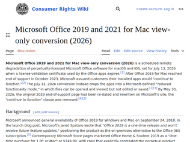
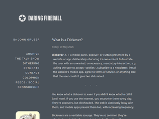
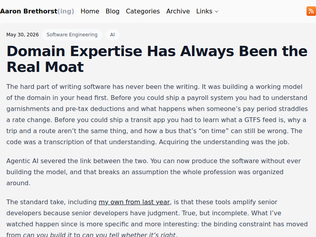
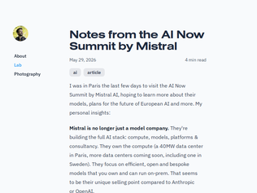
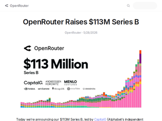
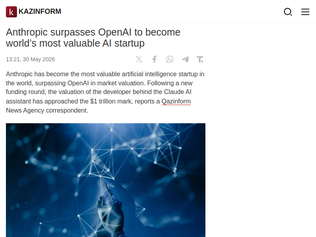
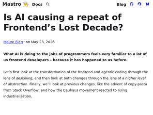
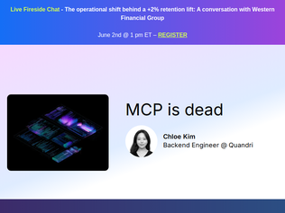

"This change would go against multiple consumer guarantees in Australia where it's 1) a right to have undisturbed possession of a product 2) products must be fit for the advertised purpose https://www.accc.gov.au/consumers/buying-products-and-servic... Microsoft would be breaking consumer law if the change goes ahead for the perpetual licenses they sold in Australia"
"I believe the urgent deprecation timeline here may be related to ai labs using offline licensed Office in agents as part of workflows and Office integration. Microsoft wants _each_ agent instance to be a separate license[0]There was always a probability that Microsoft were going to funnel offline users into O365 at some point - but I imagined that to take place over months / years not weeks and days.Buying a single license for thousands of agents may have expedited that. It has resulted in non-Microsoft labs having better ai integration into their products than Microsoft.edit: just read the detail of the note - so this is a cert expiry as part of Apple dist that is being warned about ~2 months before it happens. Standalone on Mac has a term limit.[0] https://www.businessinsider.com/microsoft-executive-suggests..."
"Been using LibreOffice for years. Everyone should. If we don't vote with our choices companies like Microsoft will keep pushing the envelope until you have to pay a monthly fee to turn on your own computer.https://www.libreoffice.org/"

"Thank you, I got a good laugh out of that.My experience was probably exactly as intended. Click on the "What is a dickover?" link trying to come up with things that it might be. And a brief moment after the page loaded (this little pause is crucial) I am hit in the face with a big annoying popup saying "This is a Dickover" followed by immediate understanding.Now at least I know what to call it the next time I visit Substack."
"I have a theory that about 97% of developers and managers completed the cookie consent (or whatever) on their own product 5 years ago and hence never see it again, and they have no idea how bad the experience for new customers actually is.So the developers and bosses all think they're doing a great job and they've got a carefully curated homepage, even though the regular users get a cloudflare captcha, then a cookie modal, then a newsletter modal, then an install-our-app modal, all blocking their access to the 'buy product' button."
"One of criteria for inclusion into Kagi Small Web [1] is no dickovers. Thanks for naming it properly John.[1] https://kagi.com/smallweb"

"While I agree that domain expertise has always been a moat, I believe the author is missing something critical: there is a big difference between being able to verify the output of a system is correct, and being able to tell a system how to generate the correct output to begin with.Personal example: I had a software engineering colleague who was the best coder of financial management systems I've ever encountered. He gained these skills through years of in-the-trenches development. One of the things he told me, and that I also observed, was that the vast majority of financial experts (basically, the people in the accounting department of companies) had an extremely difficult time just telling him what the rules of any particular transaction should be. But what they could do was tell him whether the handling of any particular transaction was right or wrong. So often times he would sit down with these accounting folks and go through lots of example transactions he came up with, and from there he essentially built up the requirements spec.In my experience, that is the primary difference between people I've known who are good software engineers and those who aren't: people who can specify the detailed rules of any system, vs. folks who take a "well, I know it when I see it" approach.I have a strong suspicion that folks who have a high degree of domain expertise in a particular area will fail as software builders even in an agentic world because they will struggle to elucidate clearly the rules in their head that they've learned over years. As an analogy, it's kind of like asking a native speaker for the grammar rules of their language. Often times they can't, but they'll just say "well, that sounds wrong." They may be "domain experts" in their language, but they'd have a hell of a time prompting an AI system on how to grade a test for grammar correctness."
""So the most valuable person in this new world is the one who has both skills because they can verify at both layers. They know the generated code is sound and they know the answers it produces are true."This has always been true since the dawn of programming."
"As a doctor who learned how to program, I started by writing useless Chrome extensions. One thing I learned early was that programmers generally do not like learning the nuances of medicine, and many are quite open about how little they want to learn it. I have tried convincing my fellow residents to learn a simple language like Lua or even just Python, but the resistance is even greater, despite the fact that they constantly express how they have always wanted to learn programming like I did.I even went as far as setting up their IDEs, configuring their environments, and encouraging them to just vibe-code. It seems that the mental friction involved in switching domains is too high for most people to justify the reward. Perhaps the reward itself is not compelling enough, or perhaps this is simply the limit of adult motivation.I started programming with Python around the time GPT-3 arrived, when Cursor had generous free tiers and excellent starter plans. A few Raspberry Pis, laptops, desktops, and countless hours of tinkering later, I discovered how much I enjoyed solving problems with software. There is so much to learn from the programming world: the concept of open-source software, the idea that people from anywhere in the world can collaborate on the same codebase, and the fact that many do so with little or no expectation of reward.As this post points out, in the project I am currently working on—a comprehensive Clinical Decision Support System—it feels almost second nature to translate the rules, hidden rules, social dynamics of hospitals, and the common mistakes that we and our juniors make every day into software. Taking those observations and turning them into systems that work is surprisingly intuitive.Perhaps the most valuable thing I gained from medical school, combined with my own personality, is the desire to keep learning. I naturally gravitated toward systems thinking, and the path forward seems clear to me: become a true expert in whichever specialties I ultimately practice, while simultaneously becoming highly skilled at systems thinking.As for systems thinking itself, I find it useful to create rules not only for the codebase but also for the testing harnesses and development processes around it. The goal is to build systems that can enforce quality automatically as the codebase grows, ensuring that standards scale without requiring constant manual oversight."
"Earlier: https://news.ycombinator.com/item?id=48324097"
"[dupe] Discussion: https://news.ycombinator.com/item?id=48324097"
"Oh this duplicate post again. SpaceX stock may as well be bonds on space flight. I'd buy them at a loss."

"OK, I'm 100% rooting for both Mistral and task focused small models.But Mistral has fall really far behind since 2025Q3. It seems they can't get good reasoning models working at even medium context sizes, which is necessary to be at the table right now.Gemma4 and Qwen3.6 are currently best in the small size; Mistral's "small" model has ~4x the parameter count at 120B and isn't even competing with models a quarter its size.Back one year ago with Mistral Small 3.1 they were keeping up, but they've fallen into irrelevancy right now.If Mistral seriously wants to play the on-prem and small task-specific model game, a decent proxy would be to build models that get the r/localLlama crowd excited"
"I really want Europe to be part of the AI development and research. And I strongly cheered for Mistral. But they are accumulating too much technological delay. This needs to be fixed, otherwise it will turn into yet another proof we are not able to run large tech with good results. Basically any Chinese lab is doing much better. It's not Mistral that created I don't want to say DeepSeek, but MiMo 2.5, Minimax 2.7, and so forth. There are only weaker and/or larger and slower (no MoE) models. Not good."
"> BNP Paribas runs Mistral models on-prem for KYC in Belgium, with sensitive data staying within the bank's walls. Abanca is using agent orchestration to handle sensitive customer information at a huge scale (2 million customers in their app). For European companies in regulated industries, this is a good alternative to relying on US hyperscalers.Mistral leaning into on-prem and European-hosted models is very smart."

"It took me quite a while to come round to OpenRouter. Originally I didn't understand why anyone would put a proxy between them and an LLM, but it actually adds some quite significant value:1. By far the lowest friction way to support and try out all the models.2. They offer billing caps! Most model providers still don't do this [EDIT: maybe they do, see reply comment], but if you're going to run anything in public it's very useful to have hard limits so it doesn't cost you $1m overnight because someone started abusing it.3. Their rankings are one of the more interesting signals for which models are popular, despite their flaws (most OpenAI and Anthropic users don't go via OpenRouter, it's currently not possible to tell the difference between many users switching v.s. one "whale" changing their preferred model)Given how API costs are becoming meaningful for a lot of companies now, having a provider like OpenRouter to help measure your spend and easily experiment with and switch providers feels like a valuable service."
"Hi HN! OpenRouter co-founder and COO here. Lots of questions about why we raised!First off: We remain founder-led and founder-controlled, and intend on being here for a long time, creating awesome products for builders all over the world. We are basically a bunch of tinkerers who like building things, and try to make stuff that we would like, when building with AI.Since this is about the raise though, happy to share perspective on it.We believe that strong companies should have a strong balance sheets. We touch large volumes of spend, and have large spend commits across the ecosystem; having the cash to withstand what may come is a responsible buy-down of risk, and makes the company extremely durable.It also tells our larger customers and provider partners that we will be able to continue to serve them (and pay our bills) for a long time to come. We don't need venture dollars to continue scaling (indeed the business is healthy) but you know when you don't want to raise $100m? When you really need it!This is also good validation to employees (current and future) that the value we are creating together is real. We also take seriously our obligation to make a return for anyone who invests; we aren't valuationmaxxing and have the privilege of getting to pick who we work with. I don't think that gets a lot of airtime in the overall start-up world, but I think it's important!Happy to answer questions and THANK YOU to everyone here who uses OpenRouter, and to everyone who has feedback for how we can improve!"
"As someone who uses OpenRouter extensively (and wrote an unintentional adjacent PR piece a few days ago: https://news.ycombinator.com/item?id=48317294 ), it's definitely the best way to try out new models without fiddling with each providers distinct APIs which is becoming a recurring concern as of late.That said, I don't understand the people who use something a full agentic backbone with expensive models like Claude Opus with OpenRouter because that 5% surcharge is meaningful at that level of cost instead of going with the source API providers. But people are clearly doing it, and it's pure revenue."

"I never want to hear from developers again that they are not susceptible to marketing. I see meet ups specifically about Claude often.Modern tupperware party.A colleague was convinced Claude is better so we played a game. We used the claude code and codex harness and I implemented some prs they needed with gpt5.5 and opus4.7 and asked them to identify which came from which only from the code.Couldn’t tell.Edit: i bet 99% of people here, if presented with a test where i gave 5 models but all of the results came from one, would not be able to discern this. Just vibes all the way down."
"I think Sam Altman is an asshole and I prefer to spend my money elsewhere.Frontier models being commoditize is inevitable. OpenAI thinks they're still competing on technology, and not user experience and market reputation otherwise they'd understand the continuous negative PR generated by Altman's chaos is going to cost them everything."
"This is an absolute joke.Anthropic capitalized upon a brief window of being more code-focused, which turned into enterprize contracts.Then on renewal rug-pulled those same enterprises - going from your seat includes all the usage a user would reasonably need, to being you pay for the seat + all tokens at API pricing. (Which they raised by how many times in a year? I don't know the actual number.)Revenue spikes like crazy through basically hostage taking made possible by Sonnet 3.5 era sentiment + enterprise purchasing lag.Parlay the revenue spike into the valuation.Crazy. Those same enterprises will get sticker shock and leave. Absurd short-term thinking.OpenAI is the better company (transparency, open sourcing things, how they handle things in general e.g. OpenClaw, how they compete, etc.) and they have the vastly better brand, the better consumer presence, and (for me and many others) they have the better coding app + models.Anthropic doing deeply customer hostile stuff - again and again - to produce a short term revenue spike does NOT make for a long-term sustainable business.For such a young business to have such a long history of bait-and-switch is absolutely crazy. (Raising prices repeatedly, lowering rate-limits repeatedly, changing the terms, banning calls which contain "OpenClaw", turning on their IDE partners, turning on their enterprise partners.)AFAICT anyone who's ever shown faith in Anthropic has been immediately exploited by them to some degree. They will quickly get the reputation of being "the Oracle of AI companies".I wouldn't even value them at half of OpenAI."

"I'm sure I'm not alone in feeling the "deep expertise" OP laments was actually deeply inconvenient to many people. I understand that there's a good living to be made from knowing browser quirks, hand-rolling accessible components, mastering CSS specificity, but this is largely accidental complexity. More people building things is straightforwardly good, and if some of those things are slower or less accessible, that's a tradeoff people are entitled to make.You can argue that abstractions hide consequences that fall on users who didn't choose them, but I'd argue back that LLMs likely have a better understanding of a11y conventions than I do as well."
"The "frontend skills" whose growing irrelevance are bemoaned in this article consist largely of navigating a minefield of unintuitive edge cases, browser incompatibilities, historic baggage, exceptions to exceptions to exceptions.Modern frontend, or the "tower of leaky abstractions", is finally a common-sense mental model for web development. Supplanted by force on top of an exploding bag of eccentricities that is web standards and conventions. The fact that it works at all and is merely a little leaky is an accomplishment in itself."
"> And we’re saddened that the new process results in lower quality work, and that a lot of people just don’t seem to care.1. Arguments like this seem to be based on the idea that, prior to AI, most of this type of work was being done by skilled artisans dedicated to quality work product. As I think anyone who actually worked in the industry and is being honest knows, this wasn't the case. There was a lot of mediocrity and worse.2. I'm not sure the work is "lower quality" depending on how you define "quality". AI might result in an uncomfortable uniformity but at the same time, a lot of AI work product is pretty darn usable because the models have been trained against conventions that, love them or hate them, "work" for the vast majority of end users."
"I used to use pandoc for my bachelors papers, which needed to be submitted as word documents. I never used templates but had a rather large "one-liner" pandoc command to convert my markdown files.At the time I'd not got round to understanding the yaml front matter etc. I even user Zettlr for a while [0].I then discovered quarto [1] and this changed everything. Much nicer experience. I used this for my masters papers.I think the tooling around pandoc is what makes it such a good tool. I remember attempting restructured text and latex and having a right hard time.[0] https://zettlr.com/ [1] https://quarto.org/"
"Pandoc is such an amazing piece of software. I used it to format my novel and made it part of a GitHub action to produce all the formats I required. I wasn't aware of templates, but some look really sleek.I keep thinking that modern text editors are just flawed and markdown, with all its downsides and limitations, is what 99% is the people need."
"Pandoc is an impressive piece of software but I could never quite get PDF generation working nicely with it.Table layouts were often broken, with text overlapping into adjacent fields. Unicode font fallback didn't work properly, with characters like "→" being silently dropped because they didn't exist in the main font. Having predictable control of page breaks, to avoid situations where header text didn't stick to the following paragraph and instead had header and paragraph text split over a page boundary, was pretty much impossible.I ended up concluding that Markdown isn't a sufficiently powerful markup language for page-based documents, and went back to using Word in all its WYSIWYG delight.That said, maybe there were ways of doing all of the above but I couldn't figure it out and found the whole process of wrestling with with both Markdown and LaTeX templates, and Pandoc configuration, unintuitive and annoying."

"I run the team at OpenAI that's responsible for the ChatGPT App Store, Codex plugins, and all things MCP.The thing that all these "MCP is dead" posts are missing is that whether or not MCP is used as a transport protocol is actually completely irrelevant.The reason MCP isn't dead is because practically ~every company on the planet is building an MCP server. I know this because we interact with all of them. Most of these companies don't have a CLI. Many of these companies don't even have an external API! And yet, they're all building MCP servers.And that's why MCP is not only not dead, but more important than ever.Maybe we will turn every MCP server into a CLI under the hood. Maybe we'll use code mode. Maybe we'll implement tool search.All of those are just implementation details to the much more important point: our AI agents are getting access to services they otherwise would never have had access to.[0] That's what matters.So, is MCP dead as a direct communication layer for models to speak to? Maybe, maybe not. Is MCP dead as a protocol? Hell no, couldn't be further from the truth.[0]: Although I will say the Codex app's computer & browser use features have made this statement a lot weaker than it used to be. If you haven't tried them yet—they're mindblowing."
"Was this written by AI?MCP is essentially just JSON RPC with a few special fields that must be included. I have reservations about JSON RPC, but there needs to be some 'service discovery' layer for LLMs to interface with.It needs to be available in places like websites, desktop applications, backend services, etc. The CLI is only one place that these systems interface with.Whatever you replace MCP with will be in a similar shape even if you specify a different communication protocol or different fields for tool discovery."
" > Problem 1: It Devours the Context Window Like would running `linearcli --help` then `notioncli --help` then `slackcli --help` etc, or am I missing something? At least with MCP your harness could add in the context only the title of each tool and add full documentation on demand, MCP server by MCP server and tool by tool. The equivalent would be for all CLI to feature a "--short-descr" command. > Problem 2: Low Operational Reliability If the tool is also using a REST API I see no reason why MCP should be slower, given the protocols are so close. When that happen, it's probably because MCP was added on top of an API, maybe hosted in a far away datacenter by a subcontractor? I won't argue that most MCP servers are probably awful, but that's an argument against the industry not the protocol. > Problem 3: Overlaps with Existing CLI/API Yes, when a CLI tool already exist. A SQL MCP server sounds stupid to me, and a waste of token. Why not a curl MCP? But in the vast majority of shops, a cli tool does not exist. At best they have an API, which is designed to be used by programs not LLMs (you know what I mean). > Provide CLI -> API -> docs, in that order Sure, and instead of slow and wasteful websites companies should first provide a native client for desktop, then a native client for phone."
Microsoft Office 2019 and 2021 for Mac view-only conversion
"This change would go against multiple consumer guarantees in Australia where it's 1) a right to have undisturbed possession of a product 2) products must be fit for the advertised purpose https://www.accc.gov.au/consumers/buying-products-and-servic... Microsoft would be breaking consumer law if the change goes ahead for the perpetual licenses they sold in Australia"
"I believe the urgent deprecation timeline here may be related to ai labs using offline licensed Office in agents as part of workflows and Office integration. Microsoft wants _each_ agent instance to be a separate license[0]There was always a probability that Microsoft were going to funnel offline users into O365 at some point - but I imagined that to take place over months / years not weeks and days.Buying a single license for thousands of agents may have expedited that. It has resulted in non-Microsoft labs having better ai integration into their products than Microsoft.edit: just read the detail of the note - so this is a cert expiry as part of Apple dist that is being warned about ~2 months before it happens. Standalone on Mac has a term limit.[0] https://www.businessinsider.com/microsoft-executive-suggests..."
"Been using LibreOffice for years. Everyone should. If we don't vote with our choices companies like Microsoft will keep pushing the envelope until you have to pay a monthly fee to turn on your own computer.https://www.libreoffice.org/"